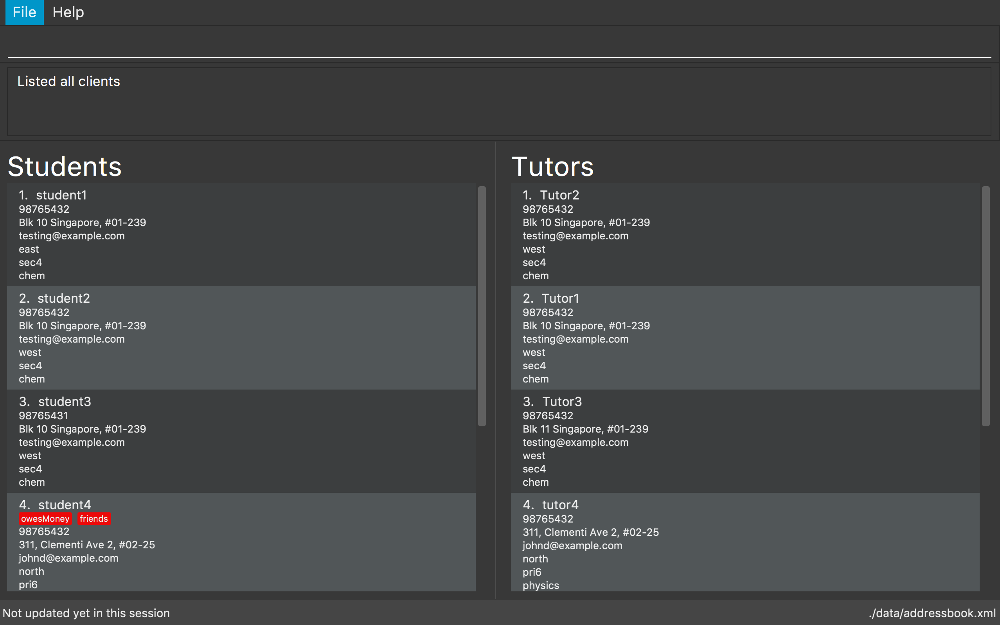

1. Introduction
TuitionCor is for those who prefer to use a desktop app for managing client information. More importantly, TuitionCor is optimized for those who prefer to work with a Command Line Interface (CLI) while still having the benefits of a Graphical User Interface (GUI). If you can type fast, TuitionCor can get your client management tasks done faster than traditional GUI apps. Interested? Jump to the Section 2, “Quick Start” to get started. Enjoy!
2. Quick Start
-
Ensure you have Java version
1.8.0_60or later installed in your Computer.Having any Java 8 version is not enough.
This app will not work with earlier versions of Java 8. -
Download the latest
TuitionCor.jarhere. -
Copy the file to the folder you want to use as the home folder for your client information.
-
Double-click the file to start the app. The GUI should appear in a few seconds.
 -
By default, upon launching TuitionCor you will be shown the active client list. If you are a new user, the active client and closed list will be filled with sample students and tutors.
-
Active client list contains two separate list. Clients shown here are those who looking for students or tutors here.
-
The list on the left represents the student’s list where you can view information regarding students who are looking for tutors.
-
The list on the right represents the tutor’s list where you can view information regarding tutors who are looking for students.
-
-
Closed client list contains two separate list. Clients shown here are those who are no longer looking for students or tutors.
-
The list on the left represents the student’s list where you can view information regarding closed students who are no longer looking for tutors.
-
The list on the right represents the tutor’s list where you can view information regarding closed tutors who are no longer looking for students.
-
-
You can easily toggle between the closed and active client’s list by command word
switch.
-
Commands available in active client’s list:addclient clear close delete edit exit find help history list match redo undo remove sort switch
|
Commands available in closed client’s list:clear exit find help history list redo undo restore switch
|
-
Type the command in the command box and press Enter to execute it.
e.g. typinghelpand pressing Enter will open the help window. -
Some example commands you can try:
-
list: lists all contacts -
addclientc/s n/John Doe p/98765432 e/johnd@example.com a/John street, block 123, #01-01 t/Urgent l/north g/s4 s/math: adds a contact of a student namedJohn Doeto TuitionCor. -
delete3: deletes the 3rd contact shown in the current list -
exit: exits the app
-
-
Some pointers:
Duplicates of similar students in the student’s list is not allowed, vice versa for tutor’s list. However, duplicate contacts between student’s and tutor’s list is allowed as it’s possible for a tutor to also be a student.A duplication of student or tutor happens when they do not have at least one difference in the following fields: {Name, Address, Phone Number, Email}.
-
Refer to Section 3, “Features” for details of each command.
3. Features
Breakdown of features
-
In v1.2:
-
Supports addition of client, either tutor or students.
-
-
In v1.3:
-
All commands are working and integrated with client.
-
Clients information are saved.
-
New match feature which allowing matching of student to tutors or tutor to students.
-
Sort feature which allows tutor’s and student’s list to be sorted by name, subject, location and grade.
-
-
In v1.4:
-
Match function now includes a ranking system.
-
The ranking system works according to the number of matched attributes.
-
The matched attributes will be highlighted in orange.
-
-
Close and restore command which allows user to close or restore a particular student or tutor .
-
This allows user to close a tutor of student upon successful matching which will be stored in a closed tutor’s or student’s list for future reference.
-
This also allows user to restore a client from the closed list to active list if the client were to become active again.
-
-
Switch command.
-
Allows user to toggle between active list and closed list.
-
-
Enhance grade, subject and location to support multiple field.
-
Remove function to remove the specified subject.
-
This allows the user to remove the specified subject from the client instead of having to type out all the remaining subjects in edit. This is under the consideration that the desired subject of the student would often change as he find’s a tutor.
-
-
-
In v1.5:
-
Issues received in v1.4 were carefully reviewed and relevant changes were made. We thank users for your generous feedback.
-
Bugs found were fixed.
-
Find function now works normally with same grades of different format. Eg: (P2 and Primary2).
-
Find function now supports multiple grade fields.
-
-
-
Coming in v2.0:
-
Auto match function.
-
Whenever a new client either student or tutor is added, a list of tutor or student who fits the criteria of the tutor or student will be displayed to the user.
-
-
Integration with Gmail.
-
Users are able to link a valid Gmail account to TuitionCor.
-
This allows TuitionCor to be able to send email notification to clients.
-
-
Email notification
-
This allows users to to send a client through email relevant contact information regarding their assigned Tutors or Students upon a successful matching.
-
-
Automatic Close function
-
An optional feature that will automatically Close a student (storing his/her contact into backup) when the last subject has been removed.
-
-
Automatic change of grade for students
-
Either by allowing TuitionCor to sync with the computer’s clock or through manually calling the command, all student’s grade will be changed eg. from p1 to p2.
-
-
Timetable availability
-
Include a timetable into TuitionCor similar to a personal reminder app. However, this timetable would instead be used to show the availability of the student/tutor to allow for better matching.
-
-
Addition grade fields to be added.
-
Polytechnic and ITE.
-
-
Matching Specific grade or subject attributes.
-
Current match command only matches the first grade or subject attribute when a client has more than 1 grade or subject attribute.
-
Search all the grade and subject attribute and highlight the specific matched attribute only.
-
-
Command Format
-
There are alias for some of the commands, which helps users to save some time. e.g. for addclient command, you can use ac n/… or a n/…
-
Words in
UPPER_CASEare the parameters to be supplied by the user e.g. inaddclient n/NAME,NAMEis a parameter which can be used asaddclient n/John Doe. -
Items in square brackets are optional e.g
n/NAME [t/TAG]can be used asn/John Doe t/friendor asn/John Doe. -
Items with
… after them can be used multiple times including zero times e.g.[t/TAG]…can be used ast/friend,t/friend t/familyetc. -
Parameters can be in any order e.g. if the command specifies
n/NAME p/PHONE_NUMBER,p/PHONE_NUMBER n/NAMEis also acceptable.
3.1. Viewing help : help
Format: help
3.2. Adding a client: addclient [Since v1.2]
Adds a client to TuitionCor
Format: addclient c/CATEGORY n/NAME p/PHONE_NUMBER e/EMAIL a/ADDRESS [t/TAG]… l/LOCATION g/GRADE s/SUBJECT
Alias Format: ac c/CATEGORY n/NAME p/PHONE_NUMBER e/EMAIL a/ADDRESS [t/TAG]… l/LOCATION g/GRADE s/SUBJECT
| A client can have any number of tags (including 0) |
| The type of location and grade accepted can be found below. |
Examples:
-
addclient c/t n/John Doe p/98765432 e/johnd@example.com a/John street, block 123, #01-01 t/urgent l/north g/p1 s/math -
ac c/s n/Betsy Crowe t/friend e/betsycrowe@example.com a/Newgate Prison p/1234567 t/urgent l/south g/primary1 s/math
3.3. Listing all persons : list
Shows a list of all persons in the address book.
Format: list
Alias Format: l
3.4. Sorting a client: 'sort' [Since v1.3]
Sorting tutor’s list based on name
Format: sort n c/t
Alias Format: so n c/t
Sorting tutor’s list based on location
Format: sort l c/t
Alias Format: so l c/t
Sorting tutor’s list based on grade
Format: sort g c/t
Alias Format: so g c/t
Sorting tutor’s list based on subject
Format: sort s c/t
Alias Format: so s c/t
Sorting student’s list based on name
Format: sort n c/s
Alias Format: so n c/s
Sorting student’s list based on location
Format: sort l c/s
Alias Format: so l c/s
Sorting student’s list based on grade
Format: sort g c/s
Alias Format: so g c/s
Sorting student’s list based on subject
Format: sort s c/s
Alias Format: so s c/s
Examples:
-
sort l c/t
Tutor’s list displayed will be sorted base on location. -
sort s c/t
Tutor’s list displayed will be sorted base on subject. -
sort n c/t
Tutor’s list displayed will be sorted base on name. -
sort g c/t
Tutor’s list displayed will be sorted base on grade. -
sort l c/s
Student’s list displayed will be sorted base on location. -
sort s c/s
Student’s list displayed will be sorted base on subject. -
sort n c/s
Student’s list displayed will be sorted base on name. -
sort g c/s
Student’s list displayed will be sorted base on grade.
3.5. Switching between active and closed client’s list : switch [Since v1.4]
Switch the display between active and closed client’s list.
Format: switch
Alias Format: sw
3.6. Closing a client : close [Since v1.4]
Close an existing and active student in active student’s list.
Format: close INDEX c/s
Alias Format: cs INDEX c/s
Close an existing and active tutor in active student’s list.
Format: close INDEX c/t
Alias Format: cs INDEX c/t
This command is only available when viewing the active client’s list. Use command word switch to toggle from closed list to active list.
|
3.7. Restoring a client : restore [Since v1.4]
Restore an existing and closed student in the closed student’s list.
Format: restore INDEX c/s
Alias Format: res INDEX c/s
Restore an existing and closed tutor in the closed tutor’s list.
Format: restore INDEX c/t
Alias Format: res INDEX c/t
This command is only available when viewing the closed client’s list. Use command word switch to toggle from active list to closed list.
|
3.8. Editing a client : edit [Since v1.3]
Edits an existing student in the address book.
Format: edit INDEX c/s [n/NAME] [p/PHONE] [e/EMAIL] [a/ADDRESS] [t/TAG]…
Alias Format: e INDEX c/s [n/NAME] [p/PHONE] [e/EMAIL] [a/ADDRESS] [t/TAG]…
Edits an existing tutor in the address book.
Format: edit INDEX c/t [n/NAME] [p/PHONE] [e/EMAIL] [a/ADDRESS] [t/TAG]…
Alias Format: e INDEX c/t [n/NAME] [p/PHONE] [e/EMAIL] [a/ADDRESS] [t/TAG]…
Examples:
-
edit 1 c/s p/91234567 e/johndoe@example.com
Edits the phone number and email address of the 1st student to be91234567andjohndoe@example.comrespectively. -
e 2 c/s n/Betsy Crower t/
Edits the name of the 2nd student to beBetsy Crowerand clears all existing tags. -
edit 1 c/t p/93213456 e/doe@example.com
Edits the phone number and email address of the 1st tutor to be93213456anddoe@example.comrespectively. -
e 2 c/t n/Beatty Crower t/
Edits the name of the 2nd tutor to beBeatty Crowerand clears all existing tags.
3.9. Remove a subject of a client : remove [Since v1.4]
Removes the specific subject from an existing student in the address book.
Format: remove INDEX c/s s/SUBJECT
Alias Format: re INDEX c/s s/SUBJECT
Edits an existing tutor in the address book.
Format: edit INDEX c/t s/SUBJECT
Alias Format: re INDEX c/t s/SUBJECT
Examples:
-
remove 1 c/s s/math
Removes the "math" subject from the 1st student. -
re 2 c/t s/physics
Removes the "physics" subject from the 2nd tutor.
3.10. Locating clients: find [Since v1.3]
Finds clients that contain any of the given keywords.
Format: find KEYWORD [MORE_KEYWORDS]
Alias Format: f KEYWORD [MORE_KEYWORDS]
Examples:
-
find John
ReturnsjohnandJohn Doe -
find p2
Returns any client having gradesp2orprimary2 -
f Betsy Tim John
Returns any client having namesBetsy,Tim, orJohn -
f 96528541
Returns any client having phone number96528541 -
f blk
Returns any client having keywordblk
3.11. Matching potential clients: match [Since v1.3]
Matches potential tutors to selected student based on INDEX
Format: match INDEX c/s
Alias Format: m INDEX c/s
Matches potential students to selected tutor based on INDEX
Format: match INDEX c/t
Alias Format: m INDEX c/t
Examples:
-
match 1 c/t
At index 1 of tutor’s list, John is a tutor finding students that are staying in west and is looking for s4 chemistry. This command will return a list of students that are staying in the west or s4 or Chemistry. -
match 1 c/s
At index 1 of student’s list, Jim is a student who requires tutors that are staying in west and teaching s4 chemistry. This command will return a list of tutors that are staying in the west or teaching s4 or teaching Chemistry.
3.12. Deleting a client : delete [Since v1.3]
Deletes the specified tutor from TuitionCor.
Format: delete INDEX c/t
Alias Format: d INDEX c/t
Deletes the specified student from TuitionCor.
Format: delete INDEX c/s
Alias Format: d INDEX c/s
Examples:
-
list
delete 2 c/s
Deletes the 2nd student in the student’s list from TuitionCor. -
list
delete 2 c/t
Deletes the 2nd tutor in the tutor’s list from TuitionCor. -
find Betsy
d 1 c/t
Deletes the 1st person in the tutor’s list based the results of thefindcommand.
3.13. Listing entered commands : history
Lists all the commands that you have entered in reverse chronological order.
Format: history
Alias Format: h
|
Pressing the ↑ and ↓ arrows will display the previous and next input respectively in the command box. |
3.14. Undoing previous command : undo
Restores TuitionCor to the state before the previous undoable command was executed.
Format: undo
Alias Format: u
|
Undoable commands: those commands that modify the TuitionCor’s content ( |
Examples:
-
delete 1
list
undo(reverses thedelete 1command) -
select 1
list
u
Theundocommand fails as there are no undoable commands executed previously. -
delete 1
clear
undo(reverses theclearcommand)
undo(reverses thedelete 1command)
3.15. Redoing the previously undone command : redo
Reverses the most recent undo command.
Format: redo
Alias Format: r
Examples:
-
delete 1
undo(reverses thedelete 1command)
redo(reapplies thedelete 1command) -
delete 1
r
Theredocommand fails as there are noundocommands executed previously. -
delete 1
clear
undo(reverses theclearcommand)
undo(reverses thedelete 1command)
redo(reapplies thedelete 1command)
redo(reapplies theclearcommand)
3.16. Clearing all entries : clear [Since v1.0]
Clears all entries from TuitionCor.
Format: clear
Alias Format: c
3.18. Saving the data
TuitionCor data are saved in the hard disk automatically after any command that changes the data.
There is no need to save manually.
3.19. advancement of Grade function [coming in v2.0]
Advances all student’s grades when this function is called (eg. change from p1 o p2). This is done under the consideration that all students would advance in grade at the end of the school year and having to edit every single entry would be very tedious when the data base is large.
Format: advanceGrade INDEX…
A success message of the format Successfully advanced students Grades will be displayed and all students whose grade is not already at the highest limit would be advanced.
The students at the specified INDEXes would not have their Grade advanced.
Example:
-
advanceGrade
All students Grades are advanced -
advanceGrade 2 10
All students except from index 2 and 10 would have their Grades advanced.
3.20. Integration with Gmail [coming in v2.0]
Link a valid Gmail account to TuitionCor.
| TuitionCor will only be linked to one valid Gmail account at any point of time |
Format: set e/EMAIL pw/PASSWORD
A success message of the format Successfully linked EMAIL to TuitionCor will be displayed for successful linking.
A failure message of the format Failed to link EMAIL to TuitionCor will be displayed for unsuccessful linking. Please check that you have inputted the correct email and password.
Example:
-
set e/BestCoordinatorInSg@gmail.com pw/Iamthebest
Links Gmail accountBestCoordinatorInSg@gmail.comto TuitionCor upon a successful login.
3.21. Email notification function [coming in v2.0]
| Please ensure that you have successfully linked a Gmail account to TuitionCor before you are able to use this function |
Parameters:
Format: notify INDEX c/CATEGORY INDEX c/CATEGORY
The first INDEX c/CATEGORY refers to the client you would like to notify and send an email with the relevant contact details.The second INDEX c/CATEGORY refers to the client whose information you would like to send to the former client.
|
| Both CATEGORY cannot be referring to the same category. |
| The email notification sent to will be based on the email in the client’s information. |
Examples:
-
notify 1 c/s 1 c/t
An email will be send to the first student on the students list using your linked Gmail account. The email will contain relevant information regarding the first tutor on the tutors list. -
notify 2 c/t 1 c/s
An email will be send to the second tutor on the tutors list using your linked Gmail account. The email will contain relevant information regarding the first student on the students list.
4. FAQ
Q: How do I transfer my data to another Computer?
A: Install the app in the other computer and overwrite the empty data file it creates with the file that contains the data of your previous TuitionCor folder.
5. Command Summary
-
AddClient
addclient c/CATEGORY n/NAME p/PHONE_NUMBER e/EMAIL a/ADDRESS [t/TAG]… l/LOCATION g/GRADE s/SUBJECT
e.g.addclient c/t n/Tutor1 p/98765432 a/Blk 10 Singapore, #01-239 e/testing@example.com t/family l/north g/p3 s/physics
Alias:ac -
Clear :
clear
Alias:c -
Delete :
delete INDEX
e.g.delete 3
Alias:d -
Edit :
edit INDEX [n/NAME] [p/PHONE_NUMBER] [e/EMAIL] [a/ADDRESS] [t/TAG]…
e.g.edit 2 n/James Lee e/jameslee@example.com
Alias:e -
Remove :
remove INDEX c/CATEGORY s/SUBJECT
e.g.remove 1 c/s s/mathAlias:re -
Find :
find KEYWORD [MORE_KEYWORDS]
e.g.find James Jake
Alias:f -
Match :
match INDEX CATEGORY
e.g.match 1 c/s
Alias:m -
Sort :
sort TYPE CATEGORY
eg.sort n c/s
Alias:so -
Close :
close INDEX CATEGORY
eg.close 1 c/s
Alias:cs -
Restore :
restore INDEX CATEGORY
eg.restore 1 c/s
Alias:res -
Switch :
switch
Alias:sw -
List :
list
Alias:l -
Help :
help -
History :
history
Alias:h -
Undo :
undo
Alias:u -
Redo :
redo
Alias:r